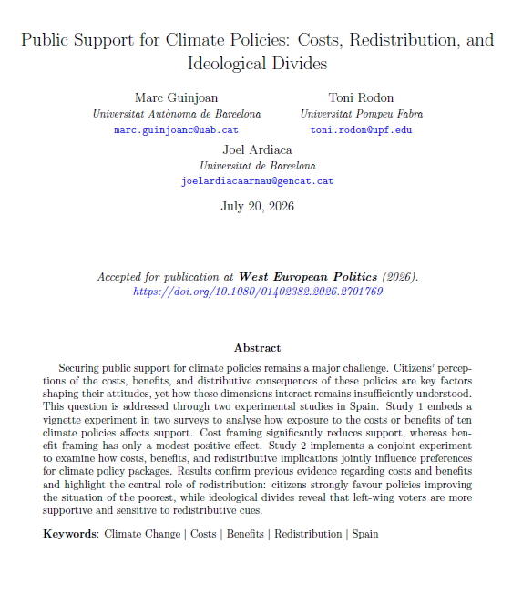
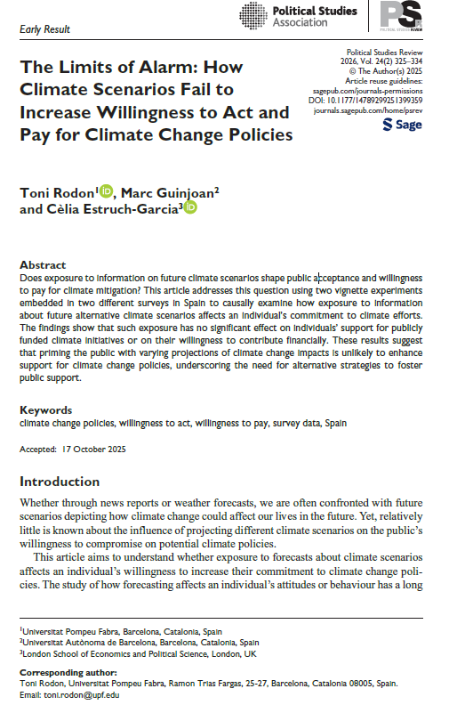

Publicacions
Publicats
Public Support for Climate Policies: Costs, Redistribution, and Ideological Divides
West European Politics (2026). https://doi.org/10.1080/01402382.2026.2701769

Malgrat l'ampli reconeixement públic del canvi climàtic com un problema greu, el suport a polítiques de mitigació concretes continua sent limitat i controvertit. Aquest article sosté que els costos percebuts d'una política, els seus beneficis previstos i les seves conseqüències distributives determinen conjuntament si la ciutadania dona suport o s'oposa a les mesures climàtiques — dimensions que la recerca existent ha estudiat de manera aïllada.
Els autors aborden aquesta qüestió mitjançant dos estudis experimentals a Espanya. L'Estudi 1 examina com l'exposició als costos o beneficis de deu polítiques climàtiques concretes afecta el suport declarat: l'enquadrament en termes de cost redueix significativament el suport, mentre que l'enquadrament en termes de benefici produeix un efecte positiu més modest. L'Estudi 2 aplica un experiment conjoint que permet a les persones enquestades ponderar costos, beneficis i implicacions redistributives en avaluar paquets de política climàtica.
Els resultats de l'experiment conjoint mostren que la redistribució té un paper central: la ciutadania afavoreix clarament les polítiques que milloren la situació dels més desfavorits, la qual cosa suggereix possibles estratègies de construcció de coalicions al voltant de polítiques eco-socials. Les divisions ideològiques són considerables: l'electorat d'esquerres mostra un suport general més gran i una sensibilitat més alta als senyals redistributius, mentre que l'electorat de dretes respon especialment a l'enquadrament en termes de cost.
The Limits of Alarm: How Climate Scenarios Fail to Increase Willingness to Act and Pay for Climate Change Policies
Political Studies Review, Vol. 24(2), pp. 325–334 (2026). https://doi.org/10.1177/14789299251399359

Un supòsit molt estès en la comunicació sobre el clima és que confrontar el públic amb projeccions vívides d'escenaris climàtics futurs augmentarà el seu suport a les polítiques de mitigació. Aquest article sotmet aquest supòsit a una prova empírica rigorosa. Mitjançant dos experiments de vinyetes integrats en enquestes representatives de la població espanyola, els autors examinen de manera causal si l'exposició a informació sobre escenaris climàtics alternatius — des de moderats fins a catastròfics — afecta el compromís de la ciutadania amb l'acció climàtica en dues dimensions clau: el seu suport a iniciatives climàtiques finançades amb fons públics i la seva disposició a contribuir-hi econòmicament.
Els resultats experimentals són sorprenentment nuls. En ambdues enquestes i ambdues mesures de resultat, l'exposició a informació sobre escenaris climàtics futurs no té cap efecte significatiu sobre la disposició de les persones a actuar o a pagar. Aquest resultat es manté en els diferents grups ideològics: tant l'electorat d'esquerres com el de dretes resulta inafectat pels tractaments d'escenaris climàtics. Els autors descarten diverses explicacions alternatives, inclosos els efectes sostre i terra, i conclouen que el resultat nul és robust i no és un artefacte de la composició de la mostra.
L'article qüestiona el supòsit dominant segons el qual les estratègies de comunicació basades en la por o el risc poden generar la voluntat política necessària per a polítiques climàtiques ambicioses, i suggereix que altres enfocaments — centrats en els cobeneficis, les normes socials o l'enquadrament col·lectiu — podrien ser més eficaços per construir coalicions públiques a favor de l'acció climàtica.
Documents de treball
Beliefs about Climate Change and Mitigation Policies: The Effect of the 2024 Valencia Floods
El 29 d'octubre de 2024, la DANA va provocar inundacions catastròfiques al País Valencià, causant la mort de 227 persones en un dels desastres naturals més mortífers de la història recent d'Espanya. Els autors aprofiten una oportunitat única: una enquesta representativa de la població espanyola ja estava en camp quan es van produir les inundacions, la qual cosa permet una anàlisi de tipus Unexpected Event during Survey Design (UESD) que compara les persones enquestades abans i després del desastre.
Mitjançant un enfocament de diferències en diferències (DiD), l'article estima com van afectar les inundacions de València a tres dimensions diferents: el coneixement i les creences sobre el canvi climàtic, la percepció de la gravetat climàtica local i el suport a les polítiques de mitigació. La granularitat geogràfica de les dades permet als autors distingir entre les zones afectades i la resta d'Espanya, tractant l'exposició geogràfica com una assignació quasi aleatòria.
Els resultats revelen un patró matisat. La percepció de la gravetat climàtica local va augmentar significativament entre les persones enquestades a les zones afectades, la qual cosa suggereix que l'exposició directa a un esdeveniment catastròfic sí que transforma la manera com la ciutadania avalua el risc climàtic al seu entorn immediat. Tanmateix, les creences generals sobre l'origen i la rellevància global del canvi climàtic només es van veure afectades marginalment. Una enquesta de seguiment realitzada uns mesos després avalua si aquests canvis persisteixen o s'esvaeixen a mesura que la crisi immediata remet.
Climate Conditions, Ideology and Attitudes towards Mitigation Policies: A Conjoint Experiment
Per què la ciutadania que dona suport àmpliament a l'acció climàtica es resisteix tan sovint a mesures de mitigació concretes? Aquest article sosté que la bretxa entre el suport difús i el suport específic a la política climàtica depèn dels costos personals i els canvis d'estil de vida que exigeixen les mesures concretes. Mitjançant un experiment conjoint integrat en una enquesta representativa d'Espanya (N = 4.764, gener de 2023), els autors fan variar simultàniament tres dimensions clau: la gravetat de les condicions climàtiques futures previstes, l'estat de l'economia i la política de mitigació concreta proposada.
Les tres polítiques abasten les principals dimensions de la intrusivitat política: un impost de societats a les empreses contaminants (cost traslladat a les empreses), una taxa per quilòmetre per a vehicles de combustibles fòssils (cost personal, mobilitat) i una restricció del consum de carn en bars i restaurants (cost personal, estil de vida). Aquest disseny permet als autors estimar en quina mesura cada atribut impulsa el suport de manera independent, i com la ideologia i les creences climàtiques moderen aquests efectes.
Els resultats revelen una marcada asimetria política. La ciutadania dona suport fermament a les polítiques que traslladen els costos a les empreses, però es resisteix activament a aquelles que exigeixen sacrifici personal o canvis d'estil de vida. D'acord amb la «hipòtesi del baix cost», la bretxa ideològica és més gran per a l'instrument menys intrusiu i es redueix considerablement per als més exigents — la qual cosa suggereix que els senyals ideològics importen més quan allò que hi ha en joc a nivell personal és menor.
Do Natural Disasters Drive Support for Climate Change Policies?
Una premissa central de bona part de la comunicació sobre el clima és que l'exposició directa a desastres naturals farà que la ciutadania sigui més receptiva a l'acció climàtica. Aquest article sotmet aquesta premissa a una de les proves empíriques més exhaustives fins ara, utilitzant dades dels Estats Units per explotar la variació geogràfica i temporal en l'exposició a desastres a gran escala.
Els autors combinen dades geogràfiques de gran detall de FEMA — que cobreixen aproximadament 15.000 desastres naturals declarats a nivell federal entre 2005 i 2022 — amb dades d'enquesta individuals del Cooperative Election Study (CES), que fan seguiment d'unes 500.000 persones durant aquest període. Fan servir tres estratègies empíriques complementàries: una anàlisi observacional de gran N; una anàlisi de panell que explota els canvis intraindividuals; i un enfocament quasiexperimental de tipus UESD.
En els tres dissenys de recerca, els resultats són consistents: no hi ha una relació sistemàtica entre l'ocurrència d'esdeveniments climàtics extrems i els canvis en les creences climàtiques o el suport a polítiques proambientals. L'article contribueix a un debat creixent sobre els límits de l'aprenentatge experiencial en la política climàtica.
Don't Call It Degrowth! Evidence from a Framing and Labeling Experiment in Spain
El destí polític del decreixement pot dependre menys dels mèrits de les polítiques subjacents que de com es denominen i es comuniquen. Aquest article aïlla aquests mecanismes comunicatius mitjançant un disseny experimental depurat: un experiment d'enquesta 2×2 en una mostra representativa de la població espanyola (N = 3.000) que fa variar de manera independent l'enquadrament (benestar enfront de reducció) i l'etiquetatge (amb o sense l'etiqueta «decreixement»).
Els resultats són consistents i clars. El suport és més alt sota l'enquadrament de benestar sense etiqueta. Descriure el concepte principalment en termes de reducció del consum i la producció redueix substancialment la probabilitat d'escollir-lo, i afegir l'etiqueta «decreixement» imposa una penalització addicional. Un aspecte crucial és que aquests efectes són similars entre els diferents subgrups segons la seva actitud climàtica: fins i tot la ciutadania molt preocupada pel canvi climàtic és sensible a com es denomina i s'enquadra el decreixement.
Expanding Global Coverage of Climate Change Support over Space and Time
El suport públic és un factor determinant crucial per a l'èxit de la política climàtica, però les dades existents sobre actituds climàtiques estan profundament fragmentades — amb formats inconsistents, esbiaixades cap a les democràcies de renda alta i difícils de comparar entre països i al llarg del temps. Aquest article presenta un conjunt de dades panell de representativitat mundial que recull les actituds públiques envers el canvi climàtic en més de 150 països entre 2010 i 2024.
El conjunt de dades integra més de 8.000 observacions de tipus país-any-ítem procedents de 12 grans enquestes internacionals, incloses la World Risk Poll, el Latinobaròmetre, l'Afrobarometer i la Gallup World Poll. Per superar les inconsistències en la redacció i les escales de resposta, els autors apliquen un model bayesià ordinal de Teoria de Resposta a l'Ítem (IRT) amb agrupament parcial, estimant una puntuació latent comuna per a cada país-any fins i tot quan falten dades o les enquestes són inconsistents.
El conjunt de dades resultant amplia significativament la cobertura geogràfica, estén la profunditat temporal amb un panell longitudinal consistent de 2010 a 2024, i millora notablement la representació dels països de renda baixa i mitjana. Està disponible públicament i constitueix un recurs valuós per a investigadors i responsables polítics implicats en la governança climàtica global.
From Storms to the Floor: Natural Disasters and Climate Change Rhetoric in the US Congress
Tot i que bona part de la recerca ha examinat com afecten els desastres naturals l'opinió pública, s'ha prestat molta menys atenció a si els esdeveniments meteorològics extrems condicionen el comportament de les elits polítiques. Aquest article cobreix aquest buit examinant la retòrica sobre el canvi climàtic a la Cambra de Representants dels Estats Units al llarg de gairebé quatre dècades (1981–2017).
Els autors combinen un extens conjunt de dades de discursos parlamentaris amb dades geogràficament detallades de desastres de FEMA, i apliquen models d'aprenentatge automàtic basats en PLN i transformers per identificar el discurs relacionat amb el clima. Això els permet explotar la variació temporal i geogràfica en l'exposició a desastres — quan aquests afecten districtes representats per membres en actiu del Congrés.
Els grans desastres sí que porten els legisladors — en particular els membres republicans — a fer referència al canvi climàtic amb més freqüència en els seus discursos. Aquesta asimetria partidista suggereix que els esdeveniments extrems poden activar un compromís retòric fins i tot entre els escèptics climàtics. Tanmateix, la retòrica impulsada pels desastres no és necessàriament favorable a l'acció climàtica — en alguns casos sembla reactiva o desdenyosa.
From Rubbish to the Ballot Box: The Electoral Effects of Door-to-Door Waste Policies
Els sistemes de recollida de residus porta a porta (DtD) s'han estès per les ciutats europees com a eina principal per complir els objectius de reciclatge de la UE, obligant les llars a separar els residus en diverses fraccions en dies designats — un canvi de política visible, incòmode i sovint controvertit. Malgrat la seva proliferació, les conseqüències electorals de la implantació del porta a porta han romàs en gran part sense estudiar.
Aquest article examina si i com els sistemes porta a porta afecten els resultats electorals a Catalunya — un context on la política ha estat adoptada progressivament pels municipis des de principis dels anys 2000. Utilitzant dades a nivell de secció censal i un disseny de diferències en diferències esglaonat que aprofita la implantació seqüencial del sistema, els autors estimen l'efecte electoral de la implantació del porta a porta en múltiples convocatòries electorals.
La implantació del sistema porta a porta comporta una penalització electoral mesurable per al partit que la implementa, especialment a curt termini. Aquest cost electoral està condicionat pel temps que fa que el sistema està implantat, per si el partit que l'implementa havia fet campanya prèviament sobre qüestions mediambientals, i pel capital social del municipi. Els resultats tenen implicacions importants per a la política de la reforma mediambiental.
The Price of Climate Policies: Willingness to Trade Off Income for Environmental Quality
Quanta renda està la ciutadania realment disposada a sacrificar per millors condicions climàtiques? Aquest article respon aquesta pregunta mitjançant un experiment conjoint inèdit integrat en l'enquesta ATTCLIMATE 2024 (N = 3.002 persones enquestades a Espanya). Les persones enquestades van avaluar parells de ciutats hipotètiques que variaven aleatòriament en sis atributs: qualitat de l'aire, preparació davant esdeveniments meteorològics extrems, infraestructura de refrigeració, zones ciclistes i vianants, salari mensual i mida de la ciutat.
La renda és, de bon tros, el determinant més important de l'elecció de ciutat: les persones enquestades són molt sensibles a les diferències de renda i necessiten relativament poca renda addicional per acceptar pitjors condicions climàtiques. Entre els atributs climàtics, la mala qualitat de l'aire és el més rellevant, seguit de la infraestructura de refrigeració, la preparació davant esdeveniments extrems i la infraestructura ciclista — però els quatre requereixen una compensació de renda modesta en comparació amb la pròpia renda.
Les anàlisis d'heterogeneïtat mostren que les persones enquestades d'esquerres i les que atribueixen el canvi climàtic a l'activitat humana atorguen una mica més de pes als atributs climàtics, però la renda continua sent el factor dominant en tots els grups. Aquests resultats qüestionen els relats optimistes sobre un canvi «postmaterialista» i suggereixen que el disseny de la política climàtica ha de fer front a la persistent prioritat que la ciutadania atorga a la seguretat econòmica.
Seeing Green? Misperceptions of Climate Change Beliefs and Behaviors in Spain
Aquest estudi examina si la ciutadania té creences precises sobre la preocupació climàtica i els comportaments sostenibles dels altres a Espanya, i si corregir aquestes percepcions errònies modifica el suport a la política climàtica. A partir d'una enquesta representativa a nivell estatal amb 2.656 persones enquestades, combinada amb un experiment factorial de vinyetes preregistrat que fa variar l'enquadrament del missatge (positiu enfront de negatiu) i l'escala del grup de referència (estatal enfront de regional), l'anàlisi dona dos resultats principals.
En primer lloc, en contra del patró de subestimació dominant a la literatura, la població espanyola sobreestima substancialment tant el percentatge de ciutadans que prioritzen el canvi climàtic com a principal problema social (percebut: 42 %; real: 22 %) com la prevalença dels comportaments sostenibles. Aquesta sobreestimació no obeeix a un efecte de projecció: persisteix entre les persones enquestades que ni prioritzen personalment el canvi climàtic ni practiquen habitualment els comportaments examinats.
En segon lloc, proporcionar informació normativa precisa no produeix cap efecte significatiu sobre el suport a cap de les tres polítiques avaluades, amb independència de l'enquadrament, el grup de referència o les creences prèvies de les persones enquestades. Aquests resultats conviden a la cautela a l'hora d'assumir que els missatges basats en normes socials poden, per si sols, generar suport a la política climàtica, i amplien l'àmbit geogràfic d'aquesta literatura al sud d'Europa.
Healthier, Not Just Greener: Public Response to Different Benefit Framings in Carbon Tax Support in Spain
Els esforços per implementar polítiques climàtiques solen trobar resistència pública. Aquest estudi, basat en un experiment d'enquesta preregistrat a Espanya (N = 2.768), examina com diferents enquadraments de la fiscalitat del carboni — que emfasitzen els costos, els beneficis climàtics primaris, els cobeneficis i les seves combinacions — condicionen el suport públic. En comparació amb una condició de referència sense informació, els missatges centrats en el cost redueixen el suport, mentre que els enquadraments de benefici l'augmenten, en particular els que destaquen cobeneficis locals com la millora de la qualitat de l'aire i de la salut pública.
Els cobeneficis també resulten més eficaços per contrarestar l'impacte negatiu de la rellevància del cost. Aquests resultats suggereixen que els resultats immediats i tangibles ressonen amb més força en el públic que els objectius climàtics llunyans. L'anàlisi de les respostes obertes confirma aquesta interpretació: els cobeneficis van resultar més destacats cognitivament, i les persones enquestades els van esmentar amb més freqüència en explicar les seves opinions.
L'estudi també revela heterogeneïtat en les respostes: la informació sobre costos redueix el suport especialment entre les persones d'esquerres i de rendes més baixes, mentre que l'enquadrament de benefici resulta més persuasiu entre les persones de dretes i de rendes més altes. En conjunt, aquests resultats subratllen el paper modest però sistemàtic de l'enquadrament a l'hora de modelar les actituds envers la fiscalitat del carboni, i el seu potencial per orientar el disseny de polítiques climàtiques més acceptables socialment.
ATTCLIMATE · Project TED2021-132344A-I00 · MCIN/AEI/10.13039/501100011033 · European Union “NextGenerationEU”/PRTR
ATTCLIMPOLS · Project PID2025-173985OB-I00 · MCIN/AEI/10.13039/501100011033